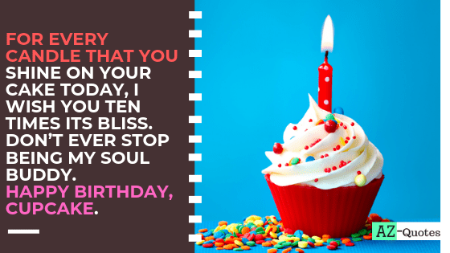

Happy Birth Day sree
This post rounds up a collection of 25 cool website designs that all feature modular content block layouts. The grid based content block layout has become popular for many types of websites, especially portfolios and curation websites, such as Pinterest.
Anki0001
Its a wonderful stroke of good fortune to know someone as amazing as her. I was at a place where the world had nothing special to offer, till she arrived. Since we connected, I’ve been on a natural high. her vivacious self has livened my spirit and revealed a side of me I never thought existed. The sound of her voice is like the harmony of the angels and I find myself caught in a trance when we talk. Her words create a world of light, hope and endless possibility. Happy birthday to you!!
I don’t know what she was doing but year after year, she was looking more and more beautiful. It’s like you add on more years to your age, but you add an ethereal glow each year as well. I swear, it’s like witchcraft! And I’m not just talking about the way she look, she become more and more beautiful within as the years pass too. There are things that are irreplaceable, and so are she was to me. When I look at her, I see one who is cute in a million ways that words can suffice to say. I’m glad to have her and proud to celebrate her birthday today. I pray your days are spent happily. Happy birthday to you, my lucky charm.
The joy that dwells in my heart this day is one that cannot be expressed by words. If one could dissect my hand, then would have the person been able to know that it has been overwhelmed by unspeakable joy. It is my pleasure to celebrate today as she turns a year older. Happy birthday to the most special persion of my life.
Anki0002
Get inspired by this modular content block layout and see how the designer organized everything to the smallest detail.

Anki0003
This is a full-width layout which includes large content blocks. These have neat animations and each leads to a specific page.

Anki0004
This website includes multiple modern features which, altogether create an exceptional design. For instance, parallax effect, animation effects, grid layout, full-width high-quality images, etc.

BL:ND – Brand Strategy Design Consultancy
In this example, you can see a stunning image gallery with a full-width grid layout. This keeps the projects more organized and more visible.

Everlovin’ Press
Here is another amazing example of an excellent grid-based layout. This adds a little order to the whole website, making it more compact, with a well-thought design.

Bernd Kammerer Portfolio
Check out the portfolio page layout from this website. It has a neat modular content block layout which includes an eye-catching animation effect.

Neighborhood Studio
This beautiful website design includes a grid layout with amazing animations. Also, the background has a gorgeous design pattern which looks stunning.

DB Works
In this example, you’ll see how you can showcase your projects in a professional, well-organized manner – with a grid layout, of course.

Claire Coullon
This modular content block layout includes various small images, with animated overlays and a short description. The whole design is boxed, to make it more compact.

AXT
Discover this full website and learn new features that you can apply in your future designs. It has a grid layout, on the works page, which keeps everything in check.

United Pixelworkers
Here’s an excellent example of a grid-based layout that you can use as an inspiration to create future designs. This layout has a well-organized grid design that will get your attention.

Berger & Föhr
This is a black & white layout with a block layout that animates into a full-colored version when hovered over each image.

NationalTraveller
Here’s a well-designed grid layered design which has an organized content. This includes multiple blocks with shadows and other features that give them a 3D look.

Webdesigner Depot
This website has a grid layout with big headings that allow you to better visualize each subject.

You’ve probably heard or used Pinterest before. This layout is a perfect example of a grid-based layout.

Designspiration
This is another great example of a website which has a modular content block layout. Follow this link and see it for yourself.

Hatch

Lees Ferry

Leodis Lager

MAP
The news page from this website includes a beautifully organized modular content block layout. Follow the link and see the full design.

My Poor Brain
This is an excellent grid-based layout which demonstrates a great order and organization. This design displays beautifully across any device.

Nowy Teatr
This is a creative website which uses a grid based layout but in a different manner. The space between them is different and they have a specific link that leads to a custom page.

Silk Tricky
Here you have a completely unique website which has a unique design. It uses grid blocks to create an interactive gallery with a creative design.

Spazoidipaolo
This is another beautiful website which has a grid-based layout. Follow this link, see the full design and discover new features and functionalities.

Grid-based websites give a certain edge to the websites that use them. Which one of these modular website designs is your favorite?